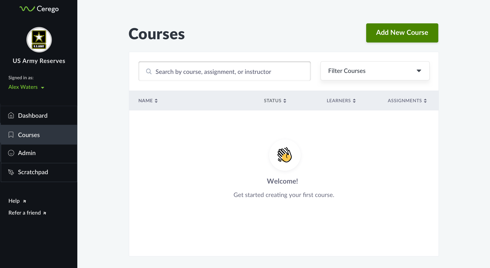

Cerego is an adaptive learning platform designed around the science of memory. Most new learning is forgotten within a week. Cerego helps students build knowledge that lasts with a distributed practice algorithm. Content is used in higher education, corporate training, and the military.

Before jumping into a design solution, we (a product manager and myself) further explored the problem space with several methods:
1. Data analysis to establish baseline usage of different course management features
2. Customer interviews to assess customer needs, goals, and workflows around course management
3. Employee interviews to validate hypotheses about our new “corporate trainer persona"
The insights: Our current corporate customers launched approximately 25 courses with around 40 students per course. Some existing features (such as bulk actions on courses) were not used, whereas other features such as content sharing were used differently depending on organizations. However, all research confirmed that users wanted to create content within courses.
We found that customers had different needs around sharing content between multiple courses. Previously, Cerego's design of a content catalog meant that one assignment could be shared with many courses, and an edit would propagate to all courses using it. In the new design, with content being "owned" by a course, we had thought it would be advantageous for shared content to be hard copied into new courses. Our customer research found that there were mixed needs around this, and some clients said it was essential to be able to push edits to shared content from a single source. Although it required more engineering work, we elected to make it possible for users to decide whether they wanted a hard copy or to accept edits from the master.
The previous navigation included a top nav bar "product switcher" which updated options in the side nav. Some products had no need of this side nav, whereas others needed a multi-level nav. One of the goals of this project was to create a very simple navigation and use breadcrumbs to get back from deeper areas of the site. In order to create a mobile-friendly experience, we opted to provide a single breadcrumb to take the user back up one level.
Simplify the navigation to improve the discoverability of courses and content creation.

The design process began with sketching and paper prototypes. Iterations became digital, with increasingly higher fidelity. Using invision, we tested a medium-fidelity course management prototype with 3 newer customers in our target vertical. The results showed:
3/3 could navigate to a specific course from the homepage
3/3 knew how to add an assignment to a course
2/3 could publish a course (this prompted an iteration)
2/3 could add goals and due dates to assignments (this prompted an iteration)
One key finding was that users wanted more clarification on how due dates would behave for users (ex: what happened after the date passed). We opted to put a help button above each table to address questions.


This project launched in April 2020. As of mid-June, the customer success team reported that their new onboarding time has been cut in half because of the new designs. Another success metric that we will track is the percentage of corporate customers choose to migrate over to our new version (70% is the target for that KPI). Other targets for the new nav and course management designs are a 20% reduction in total training time for Cerego's customer success managers. Cerego will continue to maintain the former version for publishers and others. We are confident this redesign will improve the user experience for our target customer, and I look forward to evaluating the results of this launch.